Aplikasi pelapor
Membuat laporan, mengunggah foto, mengirim lokasi, dan memantau status.
Gambaran sistem, user flow, flowchart, ERD, dan rancangan UI/UX aplikasi TUNTAS.
Tiga bagian yang saling terhubung.
Membuat laporan, mengunggah foto, mengirim lokasi, dan memantau status.
Menyimpan laporan, foto, kategori, lokasi, dan riwayat status per organisasi.
Memverifikasi, menugaskan, menangani, dan memperbarui status.
Langkah utama setiap pengguna.
Daftar atau login.
Pilih organisasi dan kategori.
Foto, lokasi GPS, dan deskripsi.
Status Menunggu Verifikasi.
Buka riwayat dan detail sampai selesai atau ditolak.
Login sebagai admin.
Lihat laporan masuk.
Foto, lokasi, dan deskripsi.
Terima, atau tolak dengan alasan.
Perbarui status. Penugasan petugas ada di tahap pengembangan.
Login sebagai petugas.
Buka daftar yang ditugaskan.
Cek rincian dan titik GPS.
Status Sedang Diproses.
Unggah foto bukti dan tandai selesai.
Alur satu laporan, termasuk keputusan saat verifikasi. Disusun dari alur kerja dan alur status TUNTAS.

Dua belas entitas dengan konsep multi-organisasi. PK adalah kunci utama, FK kunci asing, UK nilai unik.

| Atribut | Tipe data | Kunci |
|---|---|---|
| id | BIGINT | PK |
| name | VARCHAR | |
| VARCHAR | UK | |
| phone | VARCHAR | |
| password_hash | VARCHAR | |
| is_super_admin | BOOLEAN | |
| created_at | DATETIME |
| Atribut | Tipe data | Kunci |
|---|---|---|
| id | BIGINT | PK |
| name | VARCHAR | |
| type | VARCHAR | |
| logo_url | VARCHAR | |
| description | TEXT | |
| coverage_area | TEXT | |
| created_at | DATETIME |
| Atribut | Tipe data | Kunci |
|---|---|---|
| id | BIGINT | PK |
| name | VARCHAR | UK |
| description | VARCHAR |
| Atribut | Tipe data | Kunci |
|---|---|---|
| id | BIGINT | PK |
| organization_id | BIGINT | FK |
| user_id | BIGINT | FK |
| role_id | BIGINT | FK |
| is_active | BOOLEAN | |
| joined_at | DATETIME |
| Atribut | Tipe data | Kunci |
|---|---|---|
| id | BIGINT | PK |
| organization_id | BIGINT | FK |
| name | VARCHAR | |
| description | VARCHAR |
| Atribut | Tipe data | Kunci |
|---|---|---|
| id | BIGINT | PK |
| organization_id | BIGINT | FK |
| reporter_id | BIGINT | FK |
| category_id | BIGINT | FK |
| title | VARCHAR | |
| description | TEXT | |
| status | VARCHAR | |
| created_at | DATETIME | |
| updated_at | DATETIME |
| Atribut | Tipe data | Kunci |
|---|---|---|
| id | BIGINT | PK |
| report_id | BIGINT | FK, UK |
| latitude | DECIMAL | |
| longitude | DECIMAL | |
| address | VARCHAR |
| Atribut | Tipe data | Kunci |
|---|---|---|
| id | BIGINT | PK |
| report_id | BIGINT | FK |
| uploaded_by | BIGINT | FK |
| photo_url | VARCHAR | |
| photo_type | VARCHAR | |
| uploaded_at | DATETIME |
| Atribut | Tipe data | Kunci |
|---|---|---|
| id | BIGINT | PK |
| report_id | BIGINT | FK |
| officer_member_id | BIGINT | FK |
| assigned_by_member_id | BIGINT | FK |
| note | TEXT | |
| assigned_at | DATETIME | |
| completed_at | DATETIME |
| Atribut | Tipe data | Kunci |
|---|---|---|
| id | BIGINT | PK |
| report_id | BIGINT | FK |
| changed_by | BIGINT | FK |
| old_status | VARCHAR | |
| new_status | VARCHAR | |
| note | TEXT | |
| changed_at | DATETIME |
| Atribut | Tipe data | Kunci |
|---|---|---|
| id | BIGINT | PK |
| report_id | BIGINT | FK |
| user_id | BIGINT | FK |
| body | TEXT | |
| created_at | DATETIME |
| Atribut | Tipe data | Kunci |
|---|---|---|
| id | BIGINT | PK |
| user_id | BIGINT | FK |
| report_id | BIGINT | FK |
| message | VARCHAR | |
| is_read | BOOLEAN | |
| created_at | DATETIME |
| Hubungan | Kardinalitas | Kunci asing | Aturan |
|---|---|---|---|
| users ke organization_members | 1 ke banyak | user_id | Satu pengguna dapat tergabung dalam banyak organisasi. |
| organizations ke organization_members | 1 ke banyak | organization_id | Satu organisasi memiliki banyak anggota. |
| roles ke organization_members | 1 ke banyak | role_id | Satu peran dipakai banyak keanggotaan. |
| organizations ke categories | 1 ke banyak | organization_id | Setiap organisasi punya daftar kategori sendiri. |
| organizations ke reports | 1 ke banyak | organization_id | Satu organisasi memiliki banyak laporan. |
| users ke reports | 1 ke banyak | reporter_id | Setiap laporan dibuat satu pelapor. |
| categories ke reports | 1 ke banyak | category_id | Setiap laporan memiliki satu kategori. |
| reports ke report_locations | 1 ke 1 | report_id | Setiap laporan memiliki satu lokasi. |
| reports ke report_photos | 1 ke banyak | report_id | Satu laporan dapat memiliki beberapa foto. |
| users ke report_photos | 1 ke banyak | uploaded_by | Mencatat pengunggah foto. |
| reports ke assignments | 1 ke banyak | report_id | Laporan dapat ditugaskan kepada petugas. |
| organization_members ke assignments | 1 ke banyak | officer_member_id | Petugas adalah anggota organisasi. |
| organization_members ke assignments | 1 ke banyak | assigned_by_member_id | Mencatat admin yang memberi tugas. |
| reports ke report_status_histories | 1 ke banyak | report_id | Setiap perubahan status masuk riwayat. |
| users ke report_status_histories | 1 ke banyak | changed_by | Mencatat siapa yang mengubah status. |
| reports ke report_comments | 1 ke banyak | report_id | Satu laporan dapat memiliki banyak komentar. |
| users ke report_comments | 1 ke banyak | user_id | Setiap komentar ditulis satu pengguna. |
| users ke notifications | 1 ke banyak | user_id | Satu pengguna menerima banyak notifikasi. |
| reports ke notifications | 0 atau 1 ke banyak | report_id | Notifikasi dapat terkait satu laporan. |
Warna hijau dipilih karena sesuai dengan tema lingkungan.
#0B3D2E
Header, footer, judul
#15803D
Tombol dan tautan
#22C55E
Ikon, garis alur, penanda
#A3E635
Sorotan di latar gelap
#D1FAE5
Latar kartu
#FFFFFF
Latar halaman
Plus Jakarta Sans.
Teks isi, tebal 400, ukuran dasar 16 px agar nyaman dibaca di HP.
Tinggi area sentuh minimal 44 px.
Status selalu ditulis dengan teks, tidak hanya dibedakan dari warna. Kuning dan merah dipakai agar menunggu dan ditolak mudah dikenali.